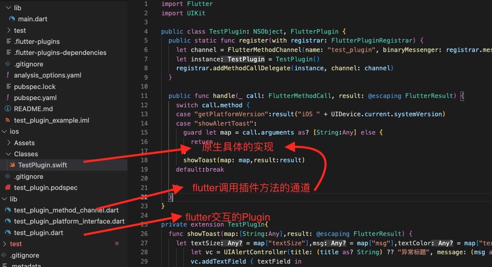

<!DOCTYPE html>


<html lang="en">
  

    <head>
      <meta charset="utf-8" />
        
      <meta
        name="viewport"
        content="width=device-width, initial-scale=1, maximum-scale=1"
      />
      <title>flutter和iOS交互 |  ayer</title>
  <meta name="generator" content="hexo-theme-ayer">
      
      <link rel="shortcut icon" href="/favicon.ico" />
       
<link rel="stylesheet" href="/dist/main.css">

      <link
        rel="stylesheet"
        href="https://cdn.jsdelivr.net/gh/Shen-Yu/cdn/css/remixicon.min.css"
      />
      
<link rel="stylesheet" href="/css/custom.css">
 
      <script src="https://cdn.jsdelivr.net/npm/pace-js@1.0.2/pace.min.js"></script>
       
 

      <!-- mermaid -->
      
      <script src="https://cdn.jsdelivr.net/npm/mermaid@8.9.2/dist/mermaid.min.js"></script>
      
    <link rel="alternate" href="/atom.xml" title="ayer" type="application/atom+xml">
</head>
  </html>
</html>


<body>
  <div id="app">
    
      
    <main class="content on">
      <section class="outer">
  <article
  id="post-Flutter/指令/flutter和原生交互"
  class="article article-type-post"
  itemscope
  itemprop="blogPost"
  data-scroll-reveal
>
  <div class="article-inner">
    
    <header class="article-header">
       
<h1 class="article-title sea-center" style="border-left:0" itemprop="name">
  flutter和iOS交互
</h1>
 

      
    </header>
     
    <div class="article-meta">
      <a href="/2022/09/11/Flutter/%E6%8C%87%E4%BB%A4/flutter%E5%92%8C%E5%8E%9F%E7%94%9F%E4%BA%A4%E4%BA%92/" class="article-date">
  <time datetime="2022-09-11T14:38:58.371Z" itemprop="datePublished">2022-09-11</time>
</a> 
  <div class="article-category">
    <a class="article-category-link" href="/categories/flutter%E5%92%8C%E5%8E%9F%E7%94%9F%E4%BA%A4%E4%BA%92/">flutter和原生交互</a>
  </div>
  
<div class="word_count">
    <span class="post-time">
        <span class="post-meta-item-icon">
            <i class="ri-quill-pen-line"></i>
            <span class="post-meta-item-text"> Word count:</span>
            <span class="post-count">1.3k</span>
        </span>
    </span>

    <span class="post-time">
        &nbsp; | &nbsp;
        <span class="post-meta-item-icon">
            <i class="ri-book-open-line"></i>
            <span class="post-meta-item-text"> Reading time≈</span>
            <span class="post-count">6 min</span>
        </span>
    </span>
</div>
 
    </div>
      
    <div class="tocbot"></div>


  
    <div class="article-entry" itemprop="articleBody">
       
  <h3 id="flutter的创建"><a href="#flutter的创建" class="headerlink" title="flutter的创建"></a>flutter的创建</h3><ol>
<li>集成SDK<ul>
<li><a target="_blank" rel="noopener" href="https://flutter.cn/docs/get-started/install/macos#get-sdk">Flutter地址</a></li>
</ul>
</li>
<li>创建<code>flutter</code>项目<ul>
<li><code>flutter create -i swift -a java --org com.flutter. test_flutter</code></li>
</ul>
</li>
<li>运行<code>flutter</code>项目<ul>
<li><code>flutter run</code><h3 id="创建packages"><a href="#创建packages" class="headerlink" title="创建packages"></a>创建packages</h3><blockquote>
<ol>
<li>纯flutter的<code>Dart package</code></li>
<li>原生插件<code>Plugin packages</code></li>
</ol>
</blockquote>
</li>
</ul>
</li>
</ol>
<h4 id="Dart-package"><a href="#Dart-package" class="headerlink" title="Dart package"></a><code>Dart package</code></h4><ul>
<li><code>flutter create --template=package hello</code></li>
<li><code>flutter pub publish --dry-run</code><ul>
<li>发布检查包是否合法</li>
</ul>
</li>
</ul>
<h4 id="原生-plugin"><a href="#原生-plugin" class="headerlink" title="原生 plugin"></a><code>原生 plugin</code></h4><ul>
<li><code>flutter create --org com.example --template=plugin --platforms=android,ios -a kotlin -i swift hello</code></li>
<li>创建插件目录结构如下<ul>
<li><code>TestPlugin</code>是原生的插件代码，在这里实现原生代码</li>
<li><code>lib</code>文件下的是，<code>flutter</code>项目调用插件功能的相关接口，以及和原生交互的<code>channel</code><br></li>
</ul>
</li>
<li>创建插件时，会顺带生成一个示例的<code>flutter</code>项目，其中的iOS文件夹内<code>GeneratedPluginRegistrant</code>,将插件注册的<code>AppDelegate</code>中<br></li>
</ul>
<h3 id="在iOS项目中集合flutter项目"><a href="#在iOS项目中集合flutter项目" class="headerlink" title="在iOS项目中集合flutter项目"></a>在iOS项目中集合flutter项目</h3><blockquote>
<p>创建<code>plugin</code>的方式，是在以<code>flutter</code>为主的项目中使用的，这里介绍下，在原生为主的项目中，如何嵌入<code>flutter</code></p>
</blockquote>
<ol>
<li>创建<code>Flutter-Flutter module</code><ul>
<li><code>flutter create --template module test_module</code></li>
</ul>
</li>
<li>将创建的<code>module</code>加入iOS工程中，并在<code>Podfile</code>文件中加入以下代码，然后<code>pod install</code> <figure class="highlight plaintext"><table><tr><td class="gutter"><pre><span class="line">1</span><br><span class="line">2</span><br><span class="line">3</span><br><span class="line">4</span><br><span class="line">5</span><br><span class="line">6</span><br><span class="line">7</span><br><span class="line">8</span><br><span class="line">9</span><br></pre></td><td class="code"><pre><span class="line">lutter_application_path = &#x27;../my_flutter&#x27;</span><br><span class="line">load File.join(flutter_application_path, &#x27;.ios&#x27;, &#x27;Flutter&#x27;, &#x27;podhelper.rb&#x27;)</span><br><span class="line">target &#x27;MyApp&#x27; do</span><br><span class="line">     install_all_flutter_pods(flutter_application_path)</span><br><span class="line">end</span><br><span class="line"></span><br><span class="line">post_install do |installer|</span><br><span class="line">    flutter_post_install(installer) if defined?(flutter_post_install)</span><br><span class="line">end</span><br></pre></td></tr></table></figure></li>
<li>热重载调试Flutter<ol>
<li>项目中需要配置网络权限 <figure class="highlight plaintext"><table><tr><td class="gutter"><pre><span class="line">1</span><br><span class="line">2</span><br><span class="line">3</span><br><span class="line">4</span><br><span class="line">5</span><br><span class="line">6</span><br></pre></td><td class="code"><pre><span class="line">&lt;key&gt;NSBonjourServices&lt;/key&gt;</span><br><span class="line">&lt;array&gt;</span><br><span class="line">&lt;string&gt;_dartobservatory._tcp&lt;/string&gt;</span><br><span class="line"> &lt;/array&gt;</span><br><span class="line"> &lt;key&gt;NSLocalNetworkUsageDescription&lt;/key&gt;</span><br><span class="line">&lt;string&gt;需要访问本地网络权限&lt;/string&gt;</span><br></pre></td></tr></table></figure></li>
<li>运行<code>iOS</code>项目</li>
<li>在flutter项目中，输入指令<code>flutter attach</code>,即可,<ul>
<li><code>r</code>为热重载，<code>R</code>为热启动，<code>q</code>退出调试</li>
</ul>
</li>
</ol>
</li>
<li>创建<code>FlutterViewController</code><ol>
<li><code>Flutter</code>设置路由的代码<figure class="highlight plaintext"><table><tr><td class="gutter"><pre><span class="line">1</span><br><span class="line">2</span><br><span class="line">3</span><br><span class="line">4</span><br><span class="line">5</span><br><span class="line">6</span><br><span class="line">7</span><br><span class="line">8</span><br><span class="line">9</span><br><span class="line">10</span><br><span class="line">11</span><br></pre></td><td class="code"><pre><span class="line">MaterialApp(</span><br><span class="line">    routes: &#123;</span><br><span class="line">      &quot;/one_page&quot;: ((context) =&gt; const AnimationHomePage()),</span><br><span class="line">      &quot;/two_page&quot;: ((context) =&gt;</span><br><span class="line">          const MyHomePage(title: &#x27;Flutter Demo Home Page&#x27;))</span><br><span class="line">    &#125;,</span><br><span class="line">    title: &#x27;Flutter Demo&#x27;,</span><br><span class="line">    theme: ThemeData(</span><br><span class="line">      primarySwatch: Colors.blue,</span><br><span class="line">    ),</span><br><span class="line">    home: _widgetForRoute(window.defaultRouteName));</span><br></pre></td></tr></table></figure></li>
<li>每次都会生成一新的<code>flutterEngine</code>,很占内存<figure class="highlight plaintext"><table><tr><td class="gutter"><pre><span class="line">1</span><br><span class="line">2</span><br></pre></td><td class="code"><pre><span class="line">let flutterVc = FlutterViewController(project: nil, initialRoute: &quot;/two_page&quot;, nibName: nil, bundle: nil)</span><br><span class="line">self.navigationController?.pushViewController(flutterVc, animated: true)</span><br></pre></td></tr></table></figure></li>
<li>设置一个全局变量<code>flutterEngine</code>，每次根据<code>flutter</code>的路由运行不同的结果<figure class="highlight plaintext"><table><tr><td class="gutter"><pre><span class="line">1</span><br><span class="line">2</span><br><span class="line">3</span><br><span class="line">4</span><br><span class="line">5</span><br><span class="line">6</span><br><span class="line">7</span><br><span class="line">8</span><br><span class="line">9</span><br></pre></td><td class="code"><pre><span class="line">static let flutterVC =  &#123;</span><br><span class="line">    let engine =  FlutterEngine(name: &quot;my flutter engine&quot;)</span><br><span class="line">    engine.run(withEntrypoint: nil, initialRoute: &quot;/two_page&quot;)</span><br><span class="line">    let vc = FlutterViewController(engine: engine, nibName: nil, bundle: nil)</span><br><span class="line">    return vc</span><br><span class="line">&#125;()</span><br><span class="line"></span><br><span class="line">Self.flutterVC.pushRoute(&quot;/two_page&quot;)</span><br><span class="line">navigationController?.pushViewController(Self.flutterVC, animated: true)</span><br></pre></td></tr></table></figure></li>
</ol>
</li>
</ol>
<h3 id="flutter和原生的交互"><a href="#flutter和原生的交互" class="headerlink" title="flutter和原生的交互"></a>flutter和原生的交互</h3><blockquote>
<p>Flutter定义了三种不同的Channel</p>
<ul>
<li><code>MethodChannel</code>：传递方法调用，一次通讯</li>
<li><code>BasicMessageChannel</code>：持续通讯，</li>
<li><code>EventChannel</code>：数据流，仅原生到flutter传递数据,<code>flutter</code>端，可以控制、暂停、取消</li>
</ul>
</blockquote>
<h4 id="MethodChannel"><a href="#MethodChannel" class="headerlink" title="MethodChannel"></a><code>MethodChannel</code></h4><ul>
<li><code>flutter</code>代码  <figure class="highlight plaintext"><table><tr><td class="gutter"><pre><span class="line">1</span><br><span class="line">2</span><br><span class="line">3</span><br><span class="line">4</span><br><span class="line">5</span><br><span class="line">6</span><br><span class="line">7</span><br><span class="line">8</span><br><span class="line">9</span><br><span class="line">10</span><br><span class="line">11</span><br><span class="line">12</span><br><span class="line">13</span><br><span class="line">14</span><br><span class="line">15</span><br><span class="line">16</span><br><span class="line">17</span><br></pre></td><td class="code"><pre><span class="line">final channel = const MethodChannel(&#x27;methodChannel&#x27;);</span><br><span class="line"></span><br><span class="line">//监听消息</span><br><span class="line">channel.setMethodCallHandler((call) &#123;</span><br><span class="line">  switch (call.method) &#123;</span><br><span class="line">    case &quot;nativeInvoke&quot;:</span><br><span class="line">      setState(() &#123;</span><br><span class="line">        _message = &#x27;MethodChannel :$&#123;call.arguments as String&#125;&#x27;;</span><br><span class="line">      &#125;);</span><br><span class="line">      break;</span><br><span class="line">    default:</span><br><span class="line">  &#125;</span><br><span class="line">  return Future((() =&gt; &#x27;MethodCall消息&#x27;));</span><br><span class="line">&#125;);</span><br><span class="line"></span><br><span class="line">//下发消息</span><br><span class="line">channel.invokeMethod(&#x27;toRoot&#x27;).then((value) =&gt; print(&quot;收到原生结果的回调,$value&quot;))</span><br></pre></td></tr></table></figure></li>
<li><code>原生</code>代码，注意这里的消息通道是<code>flutterVC</code>的<code>binaryMessenger</code>即<code>/two_page</code>，也就是最后，在Flutter中创建的<code>MethodChannel</code>,也要在<code>/two_page</code>的<code>Widget</code>生成，<figure class="highlight plaintext"><table><tr><td class="gutter"><pre><span class="line">1</span><br><span class="line">2</span><br><span class="line">3</span><br><span class="line">4</span><br><span class="line">5</span><br><span class="line">6</span><br><span class="line">7</span><br><span class="line">8</span><br><span class="line">9</span><br><span class="line">10</span><br></pre></td><td class="code"><pre><span class="line"> Self.flutterVC.pushRoute(&quot;/two_page&quot;)</span><br><span class="line">let channel = FlutterMethodChannel(name: &quot;methodChannel&quot;, binaryMessenger: Self.flutterVC.binaryMessenger)</span><br><span class="line">channel.invokeMethod(&quot;nativeInvoke&quot;, arguments: &quot;来自native的methodChannel---\(Self.time)&quot;)</span><br><span class="line">channel.setMethodCallHandler &#123;[weak self] call, result in</span><br><span class="line">    switch call.method &#123;</span><br><span class="line">    case &quot;toRoot&quot;:self?.navigationController?.popToRootViewController(animated: true)</span><br><span class="line">    default:break</span><br><span class="line">     &#125;</span><br><span class="line"> &#125;</span><br><span class="line">navigationController?.pushViewController(Self.flutterVC, animated: true)</span><br></pre></td></tr></table></figure></li>
</ul>
<h4 id="BasicMessageChannel"><a href="#BasicMessageChannel" class="headerlink" title="BasicMessageChannel"></a><code>BasicMessageChannel</code></h4><ul>
<li><code>flutter</code>代码 <figure class="highlight plaintext"><table><tr><td class="gutter"><pre><span class="line">1</span><br><span class="line">2</span><br><span class="line">3</span><br><span class="line">4</span><br><span class="line">5</span><br><span class="line">6</span><br><span class="line">7</span><br><span class="line">8</span><br><span class="line">9</span><br></pre></td><td class="code"><pre><span class="line">final _messageChannel =</span><br><span class="line">  const BasicMessageChannel(&quot;basicMessageChannel&quot;, StandardMessageCodec());</span><br><span class="line">  </span><br><span class="line">_methodChanel.invokeMethod(&quot;toRoot&quot;)</span><br><span class="line"></span><br><span class="line"> _messageChannel.setMessageHandler((message) &#123;</span><br><span class="line">  print(&#x27;收到来自iOS的$message&#x27;);</span><br><span class="line">  return Future((() =&gt; &#x27;messageChannel&#x27;));</span><br><span class="line">&#125;);</span><br></pre></td></tr></table></figure></li>
<li>原生代码  <figure class="highlight plaintext"><table><tr><td class="gutter"><pre><span class="line">1</span><br><span class="line">2</span><br><span class="line">3</span><br><span class="line">4</span><br><span class="line">5</span><br><span class="line">6</span><br><span class="line">7</span><br><span class="line">8</span><br></pre></td><td class="code"><pre><span class="line">let  messageChannel = FlutterBasicMessageChannel(name: &quot;basicMessageChannel&quot;, binaryMessenger: Self.flutterVC.binaryMessenger)</span><br><span class="line">messageChannel.sendMessage(&quot;methodChannelTwo&quot;) &#123; result in</span><br><span class="line">        print(&quot;原生：methodChannelTwo---\(String(describing: result))&quot;)</span><br><span class="line">    &#125;</span><br><span class="line">messageChannel.setMessageHandler &#123; data, reply in</span><br><span class="line">        print(&quot;收到了Flutter的数据\(String(describing: data))&quot;)</span><br><span class="line">        reply(&quot;收到了&quot;)</span><br><span class="line">&#125;</span><br></pre></td></tr></table></figure>
<h3 id="EventChannel"><a href="#EventChannel" class="headerlink" title="EventChannel"></a><code>EventChannel</code></h3></li>
<li><code>flutter</code>代码  <figure class="highlight plaintext"><table><tr><td class="gutter"><pre><span class="line">1</span><br><span class="line">2</span><br><span class="line">3</span><br><span class="line">4</span><br><span class="line">5</span><br><span class="line">6</span><br><span class="line">7</span><br><span class="line">8</span><br><span class="line">9</span><br><span class="line">10</span><br><span class="line">11</span><br><span class="line">12</span><br><span class="line">13</span><br><span class="line">14</span><br></pre></td><td class="code"><pre><span class="line">final _evenChannel = const EventChannel(&quot;eventChannel&quot;);</span><br><span class="line">StreamSubscription? _streamSubscription;</span><br><span class="line"></span><br><span class="line">_streamSubscription =</span><br><span class="line">    _evenChannel.receiveBroadcastStream([&quot;abc&quot;, 123, &quot;dasw&quot;]).listen(</span><br><span class="line">  (event) &#123;</span><br><span class="line">    print(&quot;evenChannel$event&quot;);</span><br><span class="line">  &#125;,</span><br><span class="line">  onDone: () &#123;&#125;,</span><br><span class="line">);</span><br><span class="line"></span><br><span class="line"></span><br><span class="line">//取消监听</span><br><span class="line">_streamSubscription?.cancel();</span><br></pre></td></tr></table></figure></li>
<li>原生代码  <figure class="highlight plaintext"><table><tr><td class="gutter"><pre><span class="line">1</span><br><span class="line">2</span><br><span class="line">3</span><br><span class="line">4</span><br><span class="line">5</span><br><span class="line">6</span><br><span class="line">7</span><br><span class="line">8</span><br><span class="line">9</span><br><span class="line">10</span><br><span class="line">11</span><br><span class="line">12</span><br><span class="line">13</span><br><span class="line">14</span><br><span class="line">15</span><br><span class="line">16</span><br><span class="line">17</span><br><span class="line">18</span><br></pre></td><td class="code"><pre><span class="line">let eventChannel = FlutterEventChannel(name: &quot;eventChannel&quot;, binaryMessenger: Self.flutterVC.binaryMessenger)</span><br><span class="line">eventChannel.setStreamHandler(self)</span><br><span class="line">  </span><br><span class="line">  //MARK: FlutterStreamHandler</span><br><span class="line">func onListen(withArguments arguments: Any?, eventSink events: @escaping FlutterEventSink) -&gt; FlutterError? &#123;</span><br><span class="line">    print(&quot;onListen收到了Flutter的数据\(String(describing: arguments))&quot;)</span><br><span class="line">    timer = Observable&lt;Int&gt;.timer(.seconds(0),period: .seconds(1), scheduler: MainScheduler.instance).subscribe &#123; num in</span><br><span class="line">        events(num)</span><br><span class="line">    &#125;</span><br><span class="line">    timer?.disposed(by: bag)</span><br><span class="line">    return nil</span><br><span class="line">&#125;</span><br><span class="line"></span><br><span class="line">func onCancel(withArguments arguments: Any?) -&gt; FlutterError? &#123;</span><br><span class="line">    print(&quot;onCancel收到了Flutter的数据\(String(describing: arguments))&quot;)</span><br><span class="line">    timer?.dispose()</span><br><span class="line">    return nil</span><br><span class="line">&#125;  </span><br></pre></td></tr></table></figure></li>
</ul>
<h3 id="flutter嵌入原生的view"><a href="#flutter嵌入原生的view" class="headerlink" title="flutter嵌入原生的view"></a>flutter嵌入原生的view</h3><ol>
<li><p>自定义的视图view</p>
<figure class="highlight plaintext"><table><tr><td class="gutter"><pre><span class="line">1</span><br><span class="line">2</span><br><span class="line">3</span><br><span class="line">4</span><br><span class="line">5</span><br><span class="line">6</span><br><span class="line">7</span><br><span class="line">8</span><br><span class="line">9</span><br><span class="line">10</span><br><span class="line">11</span><br><span class="line">12</span><br><span class="line">13</span><br><span class="line">14</span><br><span class="line">15</span><br><span class="line">16</span><br><span class="line">17</span><br><span class="line">18</span><br><span class="line">19</span><br><span class="line">20</span><br><span class="line">21</span><br><span class="line">22</span><br><span class="line">23</span><br><span class="line">24</span><br><span class="line">25</span><br><span class="line">26</span><br><span class="line">27</span><br><span class="line">28</span><br><span class="line">29</span><br><span class="line">30</span><br><span class="line">31</span><br><span class="line">32</span><br><span class="line">33</span><br><span class="line">34</span><br><span class="line">35</span><br><span class="line">36</span><br><span class="line">37</span><br><span class="line">38</span><br><span class="line">39</span><br><span class="line">40</span><br><span class="line">41</span><br><span class="line">42</span><br><span class="line">43</span><br><span class="line">44</span><br><span class="line">45</span><br><span class="line">46</span><br><span class="line">47</span><br><span class="line">48</span><br><span class="line">49</span><br><span class="line">50</span><br><span class="line">51</span><br></pre></td><td class="code"><pre><span class="line">class TestView:NSObject,FlutterPlatformView &#123;</span><br><span class="line">        lazy var nameLabel: UILabel = &#123;</span><br><span class="line">            let label = UILabel()</span><br><span class="line">            label.font = .systemFont(ofSize: 15)</span><br><span class="line">            label.textColor = .white</span><br><span class="line">            label.backgroundColor = .red</span><br><span class="line">            label.textAlignment = .center</span><br><span class="line">            return label</span><br><span class="line">          &#125;()</span><br><span class="line">        </span><br><span class="line">        func view() -&gt; UIView &#123;</span><br><span class="line">            return nameLabel</span><br><span class="line">        &#125;</span><br><span class="line">        </span><br><span class="line">        init(_ frame: CGRect,viewID: Int64,args :Any?,messenger:FlutterBinaryMessenger) &#123;</span><br><span class="line">            super.init()</span><br><span class="line">            if let map = args as? [String:String],</span><br><span class="line">               let text = map[&quot;text&quot;] &#123;</span><br><span class="line">                nameLabel.text = text</span><br><span class="line">            &#125;</span><br><span class="line">            methodChannel(messenger: messenger)</span><br><span class="line">        &#125;</span><br><span class="line">        </span><br><span class="line">        private func methodChannel(messenger:FlutterBinaryMessenger)&#123;</span><br><span class="line">            let  messageChannel = FlutterBasicMessageChannel(name: &quot;TestViewMessageChannel&quot;, binaryMessenger: messenger)</span><br><span class="line">            messageChannel.setMessageHandler &#123;[weak self] data, reply in</span><br><span class="line">                if let text = data as? String &#123;</span><br><span class="line">                    self?.nameLabel.text = text</span><br><span class="line">                &#125;</span><br><span class="line">            &#125;</span><br><span class="line">        &#125;</span><br><span class="line">    &#125;</span><br><span class="line"></span><br><span class="line">    class TestViewFactory:NSObject, FlutterPlatformViewFactory &#123;</span><br><span class="line">        </span><br><span class="line">     </span><br><span class="line">      var messenger: FlutterBinaryMessenger</span><br><span class="line">      init(messenger:FlutterBinaryMessenger) &#123;</span><br><span class="line">         self.messenger = messenger</span><br><span class="line">         super.init()</span><br><span class="line">       &#125;</span><br><span class="line">        </span><br><span class="line">       </span><br><span class="line">       func createArgsCodec() -&gt; FlutterMessageCodec &amp; NSObjectProtocol &#123;</span><br><span class="line">         return FlutterStandardMessageCodec.sharedInstance()</span><br><span class="line">       &#125;</span><br><span class="line">      </span><br><span class="line">      func create(withFrame frame: CGRect, viewIdentifier viewId: Int64, arguments args: Any?) -&gt; FlutterPlatformView &#123;</span><br><span class="line">            return TestView(frame, viewID: viewId, args: args,messenger: messenger)</span><br><span class="line">      &#125;</span><br><span class="line">    &#125;</span><br></pre></td></tr></table></figure></li>
<li><p>在iOS中注册该view,只执行一次</p>
<figure class="highlight plaintext"><table><tr><td class="gutter"><pre><span class="line">1</span><br><span class="line">2</span><br><span class="line">3</span><br><span class="line">4</span><br><span class="line">5</span><br><span class="line">6</span><br><span class="line">7</span><br><span class="line">8</span><br></pre></td><td class="code"><pre><span class="line">static let register: () = &#123;</span><br><span class="line">        GeneratedPluginRegistrant.register(with: TextFlutterViewController.flutterVC)</span><br><span class="line">        </span><br><span class="line">        if let registrar = TextFlutterViewController.flutterVC.registrar(forPlugin: &quot;custom_platform_view_plugin&quot;) &#123;</span><br><span class="line">            let factory = TestViewFactory(messenger: registrar.messenger())</span><br><span class="line">            registrar.register(factory, withId: &quot;custom_platform_view&quot;)</span><br><span class="line">        &#125;</span><br><span class="line">&#125;()</span><br></pre></td></tr></table></figure></li>
<li><p><code>flutter</code>中使用</p>
<figure class="highlight plaintext"><table><tr><td class="gutter"><pre><span class="line">1</span><br><span class="line">2</span><br><span class="line">3</span><br><span class="line">4</span><br><span class="line">5</span><br></pre></td><td class="code"><pre><span class="line">UiKitView(</span><br><span class="line">    viewType: &#x27;custom_platform_view&#x27;,</span><br><span class="line">    creationParams: &#123;&#x27;text&#x27;: &#x27;Flutter传给IOSTextView的参数&#x27;&#125;,</span><br><span class="line">    creationParamsCodec: StandardMessageCodec(),</span><br><span class="line">);</span><br></pre></td></tr></table></figure></li>
</ol>
 
      <!-- reward -->
      
    </div>
    

    <!-- copyright -->
    
    <div class="declare">
      <ul class="post-copyright">
        <li>
          <i class="ri-copyright-line"></i>
          <strong>Copyright： </strong>
          
          Copyright is owned by the author. For commercial reprints, please contact the author for authorization. For non-commercial reprints, please indicate the source.
          
        </li>
      </ul>
    </div>
    
    <footer class="article-footer">
       
<div class="share-btn">
      <span class="share-sns share-outer">
        <i class="ri-share-forward-line"></i>
        分享
      </span>
      <div class="share-wrap">
        <i class="arrow"></i>
        <div class="share-icons">
          
          <a class="weibo share-sns" href="javascript:;" data-type="weibo">
            <i class="ri-weibo-fill"></i>
          </a>
          <a class="weixin share-sns wxFab" href="javascript:;" data-type="weixin">
            <i class="ri-wechat-fill"></i>
          </a>
          <a class="qq share-sns" href="javascript:;" data-type="qq">
            <i class="ri-qq-fill"></i>
          </a>
          <a class="douban share-sns" href="javascript:;" data-type="douban">
            <i class="ri-douban-line"></i>
          </a>
          <!-- <a class="qzone share-sns" href="javascript:;" data-type="qzone">
            <i class="icon icon-qzone"></i>
          </a> -->
          
          <a class="facebook share-sns" href="javascript:;" data-type="facebook">
            <i class="ri-facebook-circle-fill"></i>
          </a>
          <a class="twitter share-sns" href="javascript:;" data-type="twitter">
            <i class="ri-twitter-fill"></i>
          </a>
          <a class="google share-sns" href="javascript:;" data-type="google">
            <i class="ri-google-fill"></i>
          </a>
        </div>
      </div>
</div>

<div class="wx-share-modal">
    <a class="modal-close" href="javascript:;"><i class="ri-close-circle-line"></i></a>
    <p>扫一扫，分享到微信</p>
    <div class="wx-qrcode">
      
    </div>
</div>

<div id="share-mask"></div>  
    </footer>
  </div>

   
  <nav class="article-nav">
    
      <a href="/2022/10/29/iOS%E5%AD%A6%E4%B9%A0/iOS%E8%B6%8A%E7%8B%B1/SSH%E6%8C%87%E4%BB%A4/" class="article-nav-link">
        <strong class="article-nav-caption">上一篇</strong>
        <div class="article-nav-title">
          
            SSH常用指令
          
        </div>
      </a>
    
    
      <a href="/2022/09/11/Flutter/%E6%8C%87%E4%BB%A4/%E6%8C%87%E4%BB%A4/" class="article-nav-link">
        <strong class="article-nav-caption">下一篇</strong>
        <div class="article-nav-title">flutter指令</div>
      </a>
    
  </nav>

   
<!-- valine评论 -->
<div id="vcomments-box">
  <div id="vcomments"></div>
</div>
<script src="//cdn1.lncld.net/static/js/3.0.4/av-min.js"></script>
<script src="https://cdn.jsdelivr.net/npm/valine@1.4.14/dist/Valine.min.js"></script>
<script>
  new Valine({
    el: "#vcomments",
    app_id: "",
    app_key: "",
    path: window.location.pathname,
    avatar: "monsterid",
    placeholder: "给我的文章加点评论吧~",
    recordIP: true,
  });
  const infoEle = document.querySelector("#vcomments .info");
  if (infoEle && infoEle.childNodes && infoEle.childNodes.length > 0) {
    infoEle.childNodes.forEach(function (item) {
      item.parentNode.removeChild(item);
    });
  }
</script>
<style>
  #vcomments-box {
    padding: 5px 30px;
  }

  @media screen and (max-width: 800px) {
    #vcomments-box {
      padding: 5px 0px;
    }
  }

  #vcomments-box #vcomments {
    background-color: #fff;
  }

  .v .vlist .vcard .vh {
    padding-right: 20px;
  }

  .v .vlist .vcard {
    padding-left: 10px;
  }
</style>

 
   
     
</article>

</section>
      <footer class="footer">
  <div class="outer">
    <ul>
      <li>
        Copyrights &copy;
        2021-2023
        <i class="ri-heart-fill heart_icon"></i> jingbo
      </li>
    </ul>
    <ul>
      <li>
        
        
        
        Powered by <a href="https://hexo.io" target="_blank">Hexo</a>
        <span class="division">|</span>
        Theme - <a href="https://github.com/Shen-Yu/hexo-theme-ayer" target="_blank">Ayer</a>
        
      </li>
    </ul>
    <ul>
      <li>
        
        
        <span>
  <span><i class="ri-user-3-fill"></i>Visitors:<span id="busuanzi_value_site_uv"></span></span>
  <span class="division">|</span>
  <span><i class="ri-eye-fill"></i>Views:<span id="busuanzi_value_page_pv"></span></span>
</span>
        
      </li>
    </ul>
    <ul>
      
    </ul>
    <ul>
      
    </ul>
    <ul>
      <li>
        <!-- cnzz统计 -->
        
        <script type="text/javascript" src='https://s9.cnzz.com/z_stat.php?id=1278069914&amp;web_id=1278069914'></script>
        
      </li>
    </ul>
  </div>
</footer>
      <div class="float_btns">
        <div class="totop" id="totop">
  <i class="ri-arrow-up-line"></i>
</div>

<div class="todark" id="todark">
  <i class="ri-moon-line"></i>
</div>

      </div>
    </main>
    <aside class="sidebar on">
      <button class="navbar-toggle"></button>
<nav class="navbar">
  
  <div class="logo">
    <a href="/"></a>
  </div>
  
  <ul class="nav nav-main">
    
    <li class="nav-item">
      <a class="nav-item-link" href="/">主页</a>
    </li>
    
    <li class="nav-item">
      <a class="nav-item-link" href="/archives">归档</a>
    </li>
    
    <li class="nav-item">
      <a class="nav-item-link" href="/categories">分类</a>
    </li>
    
    <li class="nav-item">
      <a class="nav-item-link" href="/tags">标签</a>
    </li>
    
    <li class="nav-item">
      <a class="nav-item-link" href="/photos">相册</a>
    </li>
    
  </ul>
</nav>
<nav class="navbar navbar-bottom">
  <ul class="nav">
    <li class="nav-item">
      
      <a class="nav-item-link nav-item-search"  title="Search">
        <i class="ri-search-line"></i>
      </a>
      
      
      <a class="nav-item-link" target="_blank" href="/atom.xml" title="RSS Feed">
        <i class="ri-rss-line"></i>
      </a>
      
    </li>
  </ul>
</nav>
<div class="search-form-wrap">
  <div class="local-search local-search-plugin">
  <input type="search" id="local-search-input" class="local-search-input" placeholder="Search...">
  <div id="local-search-result" class="local-search-result"></div>
</div>
</div>
    </aside>
    <div id="mask"></div>

<!-- #reward -->
<div id="reward">
  <span class="close"><i class="ri-close-line"></i></span>
  <p class="reward-p"><i class="ri-cup-line"></i>请我喝杯咖啡吧~</p>
  <div class="reward-box">
    
    <div class="reward-item">
      
      <span class="reward-type">支付宝</span>
    </div>
    
    
    <div class="reward-item">
      
      <span class="reward-type">微信</span>
    </div>
    
  </div>
</div>
    
<script src="/js/jquery-2.0.3.min.js"></script>
 
<script src="/js/lazyload.min.js"></script>

<!-- Tocbot -->
 
<script src="/js/tocbot.min.js"></script>

<script>
  tocbot.init({
    tocSelector: ".tocbot",
    contentSelector: ".article-entry",
    headingSelector: "h1, h2, h3, h4, h5, h6",
    hasInnerContainers: true,
    scrollSmooth: true,
    scrollContainer: "main",
    positionFixedSelector: ".tocbot",
    positionFixedClass: "is-position-fixed",
    fixedSidebarOffset: "auto",
  });
</script>

<script src="https://cdn.jsdelivr.net/npm/jquery-modal@0.9.2/jquery.modal.min.js"></script>
<link
  rel="stylesheet"
  href="https://cdn.jsdelivr.net/npm/jquery-modal@0.9.2/jquery.modal.min.css"
/>
<script src="https://cdn.jsdelivr.net/npm/justifiedGallery@3.7.0/dist/js/jquery.justifiedGallery.min.js"></script>

<script src="/dist/main.js"></script>

<!-- ImageViewer -->
 <!-- Root element of PhotoSwipe. Must have class pswp. -->
<div class="pswp" tabindex="-1" role="dialog" aria-hidden="true">

    <!-- Background of PhotoSwipe. 
         It's a separate element as animating opacity is faster than rgba(). -->
    <div class="pswp__bg"></div>

    <!-- Slides wrapper with overflow:hidden. -->
    <div class="pswp__scroll-wrap">

        <!-- Container that holds slides. 
            PhotoSwipe keeps only 3 of them in the DOM to save memory.
            Don't modify these 3 pswp__item elements, data is added later on. -->
        <div class="pswp__container">
            <div class="pswp__item"></div>
            <div class="pswp__item"></div>
            <div class="pswp__item"></div>
        </div>

        <!-- Default (PhotoSwipeUI_Default) interface on top of sliding area. Can be changed. -->
        <div class="pswp__ui pswp__ui--hidden">

            <div class="pswp__top-bar">

                <!--  Controls are self-explanatory. Order can be changed. -->

                <div class="pswp__counter"></div>

                <button class="pswp__button pswp__button--close" title="Close (Esc)"></button>

                <button class="pswp__button pswp__button--share" style="display:none" title="Share"></button>

                <button class="pswp__button pswp__button--fs" title="Toggle fullscreen"></button>

                <button class="pswp__button pswp__button--zoom" title="Zoom in/out"></button>

                <!-- Preloader demo http://codepen.io/dimsemenov/pen/yyBWoR -->
                <!-- element will get class pswp__preloader--active when preloader is running -->
                <div class="pswp__preloader">
                    <div class="pswp__preloader__icn">
                        <div class="pswp__preloader__cut">
                            <div class="pswp__preloader__donut"></div>
                        </div>
                    </div>
                </div>
            </div>

            <div class="pswp__share-modal pswp__share-modal--hidden pswp__single-tap">
                <div class="pswp__share-tooltip"></div>
            </div>

            <button class="pswp__button pswp__button--arrow--left" title="Previous (arrow left)">
            </button>

            <button class="pswp__button pswp__button--arrow--right" title="Next (arrow right)">
            </button>

            <div class="pswp__caption">
                <div class="pswp__caption__center"></div>
            </div>

        </div>

    </div>

</div>

<link rel="stylesheet" href="https://cdn.jsdelivr.net/npm/photoswipe@4.1.3/dist/photoswipe.min.css">
<link rel="stylesheet" href="https://cdn.jsdelivr.net/npm/photoswipe@4.1.3/dist/default-skin/default-skin.min.css">
<script src="https://cdn.jsdelivr.net/npm/photoswipe@4.1.3/dist/photoswipe.min.js"></script>
<script src="https://cdn.jsdelivr.net/npm/photoswipe@4.1.3/dist/photoswipe-ui-default.min.js"></script>

<script>
    function viewer_init() {
        let pswpElement = document.querySelectorAll('.pswp')[0];
        let $imgArr = document.querySelectorAll(('.article-entry img:not(.reward-img)'))

        $imgArr.forEach(($em, i) => {
            $em.onclick = () => {
                // slider展开状态
                // todo: 这样不好，后面改成状态
                if (document.querySelector('.left-col.show')) return
                let items = []
                $imgArr.forEach(($em2, i2) => {
                    let img = $em2.getAttribute('data-idx', i2)
                    let src = $em2.getAttribute('data-target') || $em2.getAttribute('src')
                    let title = $em2.getAttribute('alt')
                    // 获得原图尺寸
                    const image = new Image()
                    image.src = src
                    items.push({
                        src: src,
                        w: image.width || $em2.width,
                        h: image.height || $em2.height,
                        title: title
                    })
                })
                var gallery = new PhotoSwipe(pswpElement, PhotoSwipeUI_Default, items, {
                    index: parseInt(i)
                });
                gallery.init()
            }
        })
    }
    viewer_init()
</script> 
<!-- MathJax -->
 <script type="text/x-mathjax-config">
  MathJax.Hub.Config({
      tex2jax: {
          inlineMath: [ ['$','$'], ["\\(","\\)"]  ],
          processEscapes: true,
          skipTags: ['script', 'noscript', 'style', 'textarea', 'pre', 'code']
      }
  });

  MathJax.Hub.Queue(function() {
      var all = MathJax.Hub.getAllJax(), i;
      for(i=0; i < all.length; i += 1) {
          all[i].SourceElement().parentNode.className += ' has-jax';
      }
  });
</script>

<script src="https://cdn.jsdelivr.net/npm/mathjax@2.7.6/unpacked/MathJax.js?config=TeX-AMS-MML_HTMLorMML"></script>
<script>
  var ayerConfig = {
    mathjax: true,
  };
</script>

<!-- Katex -->

<!-- busuanzi  -->
 
<script src="/js/busuanzi-2.3.pure.min.js"></script>
 
<!-- ClickLove -->
 
<script src="/js/clickLove.js"></script>
 
<!-- ClickBoom1 -->

<!-- ClickBoom2 -->

<!-- CodeCopy -->
 
<link rel="stylesheet" href="/css/clipboard.css">
 <script src="https://cdn.jsdelivr.net/npm/clipboard@2/dist/clipboard.min.js"></script>
<script>
  function wait(callback, seconds) {
    var timelag = null;
    timelag = window.setTimeout(callback, seconds);
  }
  !function (e, t, a) {
    var initCopyCode = function(){
      var copyHtml = '';
      copyHtml += '<button class="btn-copy" data-clipboard-snippet="">';
      copyHtml += '<i class="ri-file-copy-2-line"></i><span>COPY</span>';
      copyHtml += '</button>';
      $(".highlight .code pre").before(copyHtml);
      $(".article pre code").before(copyHtml);
      var clipboard = new ClipboardJS('.btn-copy', {
        target: function(trigger) {
          return trigger.nextElementSibling;
        }
      });
      clipboard.on('success', function(e) {
        let $btn = $(e.trigger);
        $btn.addClass('copied');
        let $icon = $($btn.find('i'));
        $icon.removeClass('ri-file-copy-2-line');
        $icon.addClass('ri-checkbox-circle-line');
        let $span = $($btn.find('span'));
        $span[0].innerText = 'COPIED';
        
        wait(function () { // 等待两秒钟后恢复
          $icon.removeClass('ri-checkbox-circle-line');
          $icon.addClass('ri-file-copy-2-line');
          $span[0].innerText = 'COPY';
        }, 2000);
      });
      clipboard.on('error', function(e) {
        e.clearSelection();
        let $btn = $(e.trigger);
        $btn.addClass('copy-failed');
        let $icon = $($btn.find('i'));
        $icon.removeClass('ri-file-copy-2-line');
        $icon.addClass('ri-time-line');
        let $span = $($btn.find('span'));
        $span[0].innerText = 'COPY FAILED';
        
        wait(function () { // 等待两秒钟后恢复
          $icon.removeClass('ri-time-line');
          $icon.addClass('ri-file-copy-2-line');
          $span[0].innerText = 'COPY';
        }, 2000);
      });
    }
    initCopyCode();
  }(window, document);
</script>
 
<!-- CanvasBackground -->
 
<script src="/js/dz.js"></script>
 
<script>
  if (window.mermaid) {
    mermaid.initialize({ theme: "forest" });
  }
</script>


    
    <div id="music">
    
    
    
    <iframe frameborder="no" border="1" marginwidth="0" marginheight="0" width="200" height="86"
        src="//music.163.com/outchain/player?type=2&id=22707022&auto=1&height=66"></iframe>
</div>

<style>
    #music {
        position: fixed;
        right: 15px;
        bottom: 0;
        z-index: 998;
    }
</style>
    
  </div>
<script src="/live2dw/lib/L2Dwidget.min.js?094cbace49a39548bed64abff5988b05"></script><script>L2Dwidget.init({"pluginRootPath":"live2dw/","pluginJsPath":"lib/","pluginModelPath":"assets/","tagMode":false,"debug":false,"model":{"show":true,"jsonPath":"ak12_3302"},"display":{"position":"right","width":150,"height":300,"vOffset":100},"mobile":{"show":true},"react":{"opacity":0.7},"log":false});</script></body>

</html>